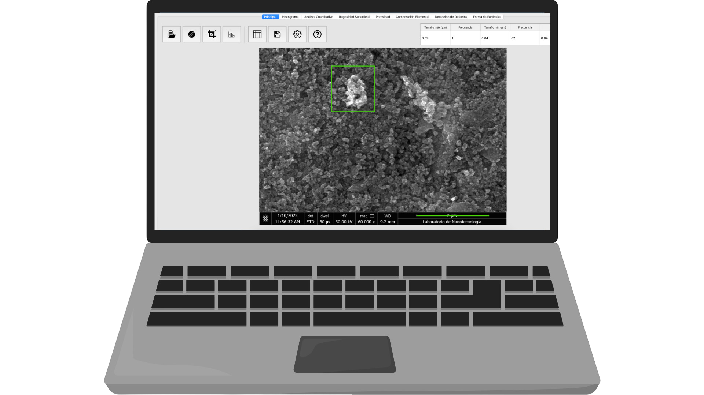
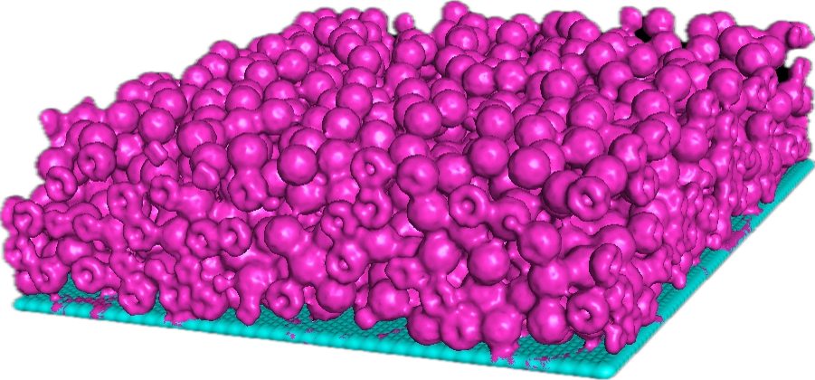
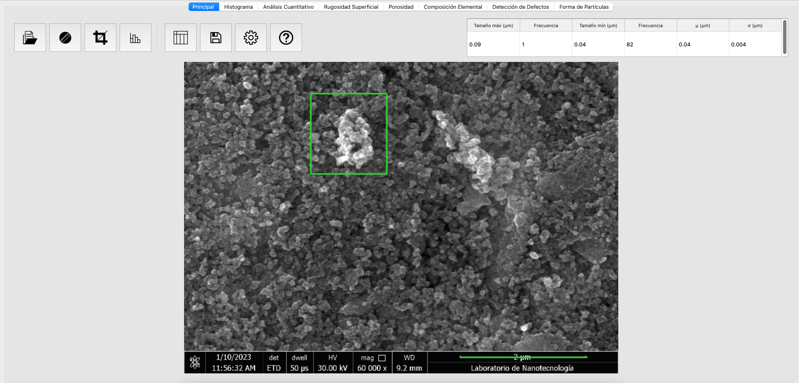
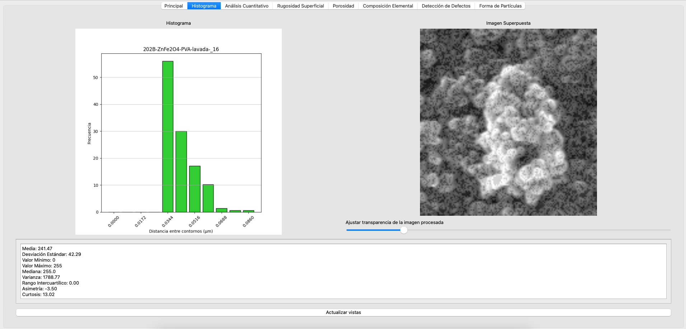
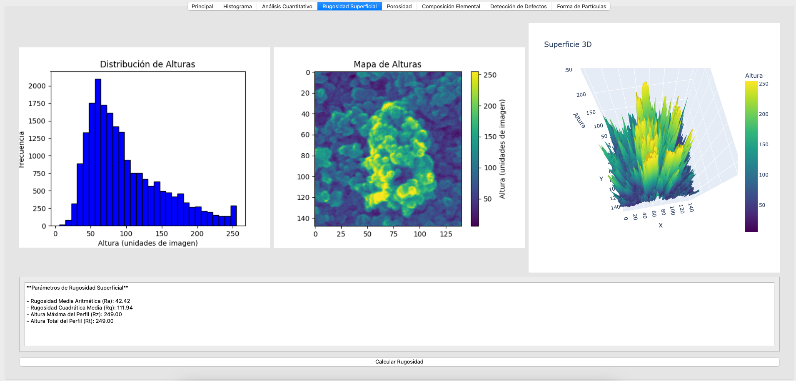
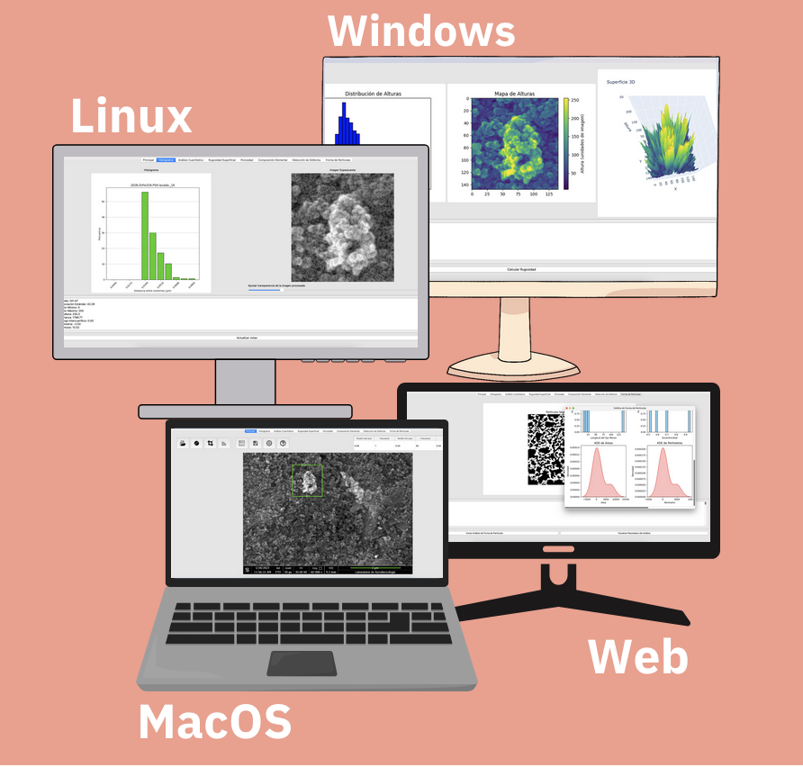

Plataforma MAPs
MAP-Nano
Análisis reproducible para imágenes de microscopía electrónica de barrido y ópticas: segmentación, rugosidad y distribuciones de tamaño.


Caracteriza materiales con mayor claridad
MAP-Nano ayuda a convertir caracterización de materiales en métricas claras, repetibles y exportables.
Explora los flujos MAPs
Conoce los flujos de trabajo, entradas y resultados que se adaptan a cada área.
Interfaz clara para inspección ágil
Delimita regiones de interés y obtén métricas de distribución (Weibull/Gauss) con detección de bordes configurable.
- Herramientas interactivas de ROI y máscaras
- Procesamiento por lote para carpetas completas
- Trazabilidad y reproducibilidad

Detección de forma y distribuciones de tamaño
Ajuste de formas para obtener distribuciones de tamaño y estadísticas morfológicas robustas.
- Contornos, esqueletos y ajuste de curvas
- Exportación a CSV, PDF y API
- Controles de calidad y valores atípicos

Rugosidad superficial con criterio reproducible
Estudia distribuciones de altura y rugosidad a distintas escalas; construye modelos desde datos experimentales.
- Ra, Rq, Rz y métricas personalizadas
- Análisis multiescala
- Reportes con figuras y tablas

Web, escritorio y despliegue local
Usa MAP-Nano en web y, según el entorno, en escritorio. El despliegue local sigue en beta mientras continuamos perfeccionando esa versión.
- Gestión de usuarios y roles
- Análisis versionados
- Despliegue local guiado (beta)

Especificaciones técnicas
Entradas
Imágenes SEM u ópticas (PNG/JPG/TIFF), carpetas por lote y máscaras de ROI.
Salidas
Tablas CSV, imágenes anotadas, reportes PDF y API JSON.
Algoritmos
Umbralado, morfología, contornos/esqueletos, ajuste de forma y distribuciones (Weibull/Gauss).
Compatibilidad
Windows, Linux, macOS y navegador web según el entorno acordado.